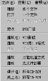

|
|
| 当前位置：电脑报电子版 > 1999 年 > 47 期 > 软件世界 > 《超级解霸》在局域网中的妙用 |
| 《 《超级解霸》在局域网中的妙用 》 |
| 本人是一名在校学生,闲来无事也看一看VCD,遇到好的片子大家争先恐后抢着看，很不方便，如果能在网上进行广播播放就好了，偶尔发现了播放方法，不敢独享，特介绍如下： 软件是：1. 《豪杰超级解霸5.5》 (正版)。 2. 豪杰超级解霸5.5十全大补丸1.5M。 3. 补丁文件DVBVOD.DLL和STHCHINA.DLL（102K）。 以上补丁可在http:／／www.herosoft.com软件下载区找到。 第一步:首先执行十全大补丸,再将DVBVOD.DLL和STHCHINA.DLL 拷到超级解霸的安装目录,覆盖原来的文件。 第二步:执行超级解霸,在文件菜单中多一项“接收 DVB广播”选项.如图1，这时打开此项会出现“No Dvb STream data broadcast”的错误。 第三步:当播放一影音文件时,会有“允许广播”对话框出现，选择“进行DVB广播”就可以进行网上广播了。这是广播端的设置。整个局域网的计算机可以同时播放一部或几部VCD电影。联网的学生宿舍也可以同时看一部VCD电影,到底能播放几部电影要看网卡和计算机的速度。ISA网卡太慢，只能接收很难广播；机器速度小于300MHz者也不适合进行广播。最好只有一部VCD进行广播，如果多个计算机同时进行VCD广播可能会严重影响广播效果。 第四步:接收端的《超级解霸》也要进行升级, 升级的方法与播放端一样。正确升级后打开《超级解霸》时选“接收DVB”的选项， 出现如图2的对话框，选择某一个IP的播放信息就能收看了。以上的操作在10M局域网上取得了很好的效果。 注意的几点: 1.光驱不能同时打开两个以上的VCD文件。 2.最好不要让广播占满网络，否则其他通讯受阻10M网可以达到7个VCD同时广播。这需要DVB广播服务器(即NET10MBC.EXE在 http:／／www.herosoft.com软件下载区也能找到) 3.如果直接用《超级解霸》做互相广播在10M网将发生严重碰撞，最多只能有3 个VCD互相广播。 4．DVB广播服务器可以使10M网达到极限，7X1.5M=10.5M，大家在学校或办公室就可以自己玩 DVB广播！但如果实际网络速度达不到10M，就应减少播放VCD的数目。 （李 杰） |
| 下载本期推荐软件 | 页 首 |
| 《电脑报》版权所有，电脑报网站编辑部设计制作发布 |